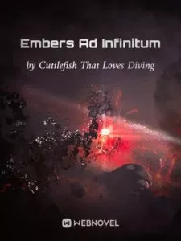

Resumen
Todos en el polvo creen que enterrado en lo profundo de una cierta ruina en peligro y hambre, hay un camino hacia un nuevo mundo.
Siempre que pueda encontrar una llave única y abrir esa puerta, puede ingresar al nuevo mundo.
Allí, la tierra es abundante, como la leche y la miel que fluyen, el sol brilla y parece lavar el frío y la oscuridad. La gente ya no tiene que enfrentarse a la esterilidad,
Hace treinta mil años, el viejo árbol al pie de la montaña se convirtió en un demonio. Todavía estaba refinando el qi.
los monstruos, las infecciones, las distorsiones y todo tipo de cosas peligrosas.
Allí, los niños son felices, los adultos son felices y todo es hermoso.
Todo erudito en antigüedades, cazador de reliquias e investigador histórico sobre el polvo sabe que este es el nuevo mundo.
Detalles
Título corto : EAI
Titulo original : 长夜余火
Estado : Ongoing
Autor(a) : Cuttlefish That Loves Diving
Género : Sci-fi
CAPITULOS.